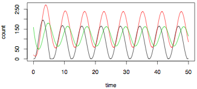

A python package for simulation of deterministic and stochastic dynamical systems using cuda. Theoretical Systems Biology Group, Imperial College By Yanxiang Zhou, Juliane Liepe, Xia Sheng, Michael P.H. Stumpf and Chris Barnes |
||||
NEWS 11/08/2010: cuda-sim version 0.03 released 28/07/2010: cuda-sim version 0.02 released |
  |